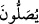

Yine salevâtta Allâh’a daha bir yakınlık mertebeleri artırılmış olur. Çünkü salevât ile
Hz. Peygamber (s.a.)’in mertebesi artar. Böyle olunca ümmetin mertebesi de artmış
olur. Çünkü tâbi olanın mertebesi metbûnun/kendisine tâbi olunanın mertebesine tâbidir.
Nitekim Hz. Mevlânâ Celâleddîn Rûmî (k.s.) Mi‘râciyye’sinde şu sözüyle buna işâret
etmiştir:
Sana salavât getiririm ki yakınlığım artsın,
Çünkü parçalar bütüne yaklaştıkça mukarreb (yakın) olur.
Yine bu salevâtta sevgi ve muhabbetin ısbâtı vardır. Kim bir şeyi severse onu çok
anar. Bazıları şöyle demiştir: “
(salevât getirirler)” şeklinde muzârî siygasının
kullanılması, meleklerin dâimâ salevât getirdiklerine delâlet eder. O halde salevât
getiren kişi meleklere benzemiş olur. “Kim bir kavme benzemeye çalışırsa, o da
onlardandır.”[287] hükmüne göre meleklerin özelliği olan temizlik ve günahsızlık gibi
vasıflara sâhip olur ve rûhânî âleme âşinâlık kazanır.
Ey insanların efendisi, sana salât ve selâm
Ay-yıl, sabah-akşam dilimizin virdidir.
Uzaktan senin makâmına hangi hediyeyi gönderelim,
Elimizde sadece bu salevât vardır, vesselâm.
Sehl b. Abdullah Tüsterî (k.s.) şöyle demiştir: “Muhammed (s.a.)’e salât etmek
ibâdetlerin en fazîletlisidir. Çünkü bu salâtı bizzat Allah Teâlâ ve melekleri yapmış,
sonra onu mü’minlere emretmiştir. Diğer ibâdetler ise böyle değildir. Yâni Allah diğer
ibâdetleri emretmiş, ancak bizzat kendisi yapmamıştır.”
Sıddîk-ı Ekber (r.a.) şöyle demiştir: “Hz. Peygamber (s.a.)’e salât etmek günahları
silip yok etme konusunda soğuk suyun ateşi söndürmesinden daha tesirlidir.”
Salevât getirmek köle âzâd etmekten daha fazîletlidir. Çünkü köle âzâd etmek
cehennemden âzâd olma cennete girmeye mukabildir. Hz. Peygamber’e selâm etmek ise
Allâh’ın selâmına mukabildir. Allâh’ın selâmı ise bin haseneden daha üstündür.
Vâsıtî şöyle demiştir: “Hz. Peygamber (s.a.)’e tüm vakarınla salât et. Getirdiğin
salevâta kalbinde bir değer biçme. Yâni Rasûlullah (s.a.)’e salevâtından dolayı O’nun
senin üzerindeki hakkından bir şey ödediğin zannına kapılarak salevâtına değer biçme.
Çünkü sen salevâtınla kendi nefsinin hakkını ödemektesin. Zîrâ O’nun hakkı, ümmetin
tamamının ödeyemeyeceği kadar yüce ve yüksektir. Çünkü O, Allâh’ın salevâtı
içindedir. Öyleyse senin O’na salevâtın O’nun sâyesinde kendine bir rahmet celbetme
talebinden ibârettir.
Bir hadîste şöyle buyrulmuştur: “Allâh’ın bir meleği vardır ki Allah ona bütün
mahlûkâtın seslerini duyma kabiliyeti vermiştir. Ben vefât ettiğim zaman o melek
kıyamete kadar benim kabrimin başında durur. Ümmetimden kim bana salât ederse